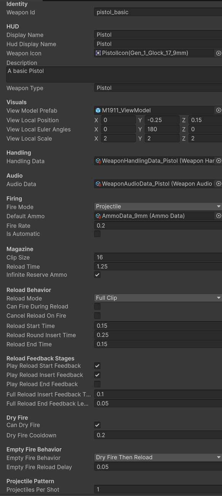
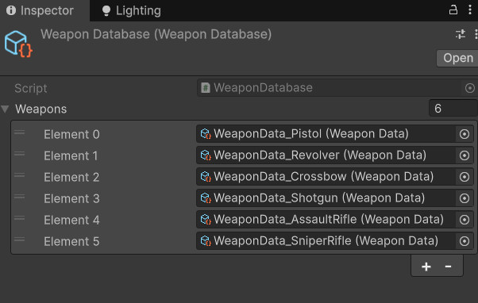
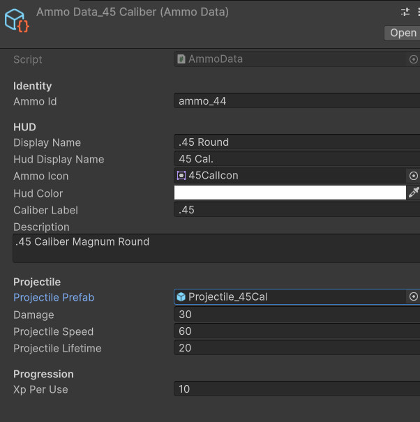
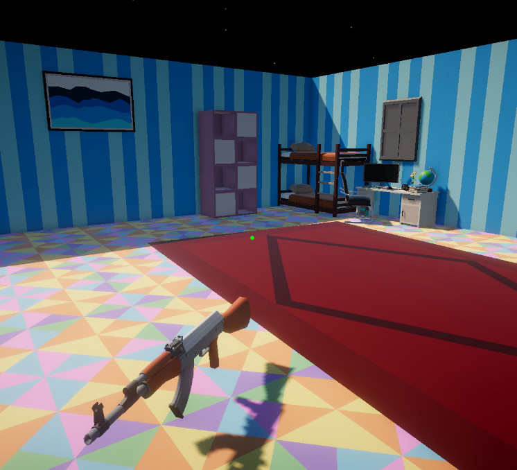

WeaponData ScriptableObject
Each weapon is tuned as data, making new weapons easier to create without rewriting controller logic.
- WeaponData
- Inspector Tuning
- ScriptableObjects
A data-driven Unity weapon architecture for defining weapon behavior, preserving owned weapons, cycling loadouts, supporting mission-specific restrictions, and separating long-term player collection from temporary trial equipment.
This system turns weapons into reusable data objects instead of one-off scene objects.
The weapon data and loadout system lets each weapon define its identity, HUD display, view model prefab, fire mode, ammo type, reload behavior, projectile pattern, XP value, handling data, and audio data through ScriptableObjects.
The player can own a growing weapon collection, cycle through available weapons, and keep an active weapon saved across sessions. At the same time, individual mission drills can temporarily equip or restrict weapons so a pistol drill stays a pistol drill, even if the player owns a shotgun, revolver, or rifle.
The important design split is collection versus permission. The save system can remember what the player owns, while the current mission can decide what the player is allowed to use right now.
Define weapons as reusable data and connect them to player loadout, mission restrictions, ammo behavior, and progression.
Own weapon → Equip weapon → Fire/reload/use weapon → Gain XP → Save active weapon and owned collection.
Demonstrates data-driven gameplay design, reusable ScriptableObject architecture, and scalable loadout rules.
Screenshot references for weapon data, player-facing loadout UI, mission restrictions, ammo definitions, and pickup flow.

Each weapon is tuned as data, making new weapons easier to create without rewriting controller logic.

The database turns saved weapon IDs into usable WeaponData references and keeps owned weapons in a consistent order.

The bandolier reflects the player’s owned collection and gives the player readable weapon switching feedback.

Pedestals can offer weapons inside trials while preserving the larger saved player collection.

Ammo data separates projectile damage, projectile prefab, speed, and lifetime from the weapon controller.

Weapons can exist as pickups in the world, supporting collection, drop flow, and inventory expansion.
The system supports both long-term weapon collection and short-term mission control.
Each weapon is defined through WeaponData, including identity, visuals, firing, reload behavior, ammo, handling, and audio.
Owned weapon IDs are saved in player progress and rebuilt through the weapon database.
The active weapon ID is saved, restored, and used by the weapon controller to spawn the correct view model.
A drill can lock weapon switching or equip a specific reward weapon to preserve challenge structure.
Weapon usage can award XP by weapon type, letting weapon families progress independently.
The player’s collection, active weapon, and weapon XP persist after scene changes and reloads.
The weapon architecture separates weapon definitions, saved ownership, active selection, ammo behavior, and player input.
Defines each weapon’s identity, HUD display, view model, handling data, audio data, fire mode, ammo, magazine size, reload mode, dry fire behavior, projectile pattern, and XP values.
Provides a central weapon lookup table so saved weapon IDs can be converted back into usable WeaponData assets.
Handles active weapon state, firing, reload routines, projectile spawning, ammo state, feedback events, and view model spawning.
Handles weapon cycling by asking the database for the player’s owned weapons, respecting mission selection locks, and equipping the next or previous weapon.
Defines projectile prefab, damage, speed, lifetime, ammo identity, and future ammo variations such as armor-piercing or elemental rounds.
Lets target range missions temporarily control weapon selection so drills can enforce specific weapon challenges.
Each weapon is a data package, not a hardcoded branch hiding inside the player controller.
WeaponData stores the values that make one weapon different from another. This includes presentation fields such as display name and icon, gameplay fields such as fire rate and magazine size, and system references such as handling data, audio data, ammo data, and view model prefab.
This makes the player controller more reusable. Instead of asking “is this a pistol, shotgun, or rifle,” the controller reads the current WeaponData and acts on that data.
That structure makes weapon creation faster and makes the system more scalable as the project adds more categories, including automatics, crossbows, revolvers, shotguns, snipers, and special weapons.
These dropdowns show the core data and loadout scripts behind the weapon collection flow.
//-----WeaponData.cs START-----
using UnityEngine;
public enum WeaponFireMode
{
Projectile,
Hitscan
}
public enum WeaponReloadMode
{
FullClip,
OneRoundAtATime
}
public enum EmptyFireBehavior
{
DryFireOnly,
ReloadOnly,
DryFireThenReload
}
[CreateAssetMenu(
fileName = "WeaponData_NewWeapon",
menuName = "Echo Systems Lab/Weapons/Weapon Data")]
public class WeaponData : ScriptableObject
{
[Header("Identity")]
public string weaponId;
[Header("HUD")]
public string displayName;
public string hudDisplayName;
public Sprite weaponIcon;
[TextArea(2, 4)]
public string description;
public string weaponType = "Pistol";
[Header("Visuals")]
public GameObject viewModelPrefab;
public Vector3 viewLocalPosition;
public Vector3 viewLocalEulerAngles;
public Vector3 viewLocalScale = Vector3.one;
[Header("Handling")]
public WeaponHandlingData handlingData;
[Header("Audio")]
public WeaponAudioData audioData;
[Header("Firing")]
public WeaponFireMode fireMode = WeaponFireMode.Projectile;
public AmmoData defaultAmmo;
public float fireRate = 0.35f;
public bool isAutomatic;
[Header("Magazine")]
public int clipSize = 6;
public float reloadTime = 1.25f;
public bool infiniteReserveAmmo = true;
[Header("Reload Behavior")]
public WeaponReloadMode reloadMode = WeaponReloadMode.FullClip;
[Tooltip("If true, the player can fire before a reload has fully completed.")]
public bool canFireDuringReload = false;
[Tooltip("If true, firing during reload stops the reload process.")]
public bool cancelReloadOnFire = true;
[Tooltip("Only used for one-round-at-a-time reload weapons.")]
public float reloadStartTime = 0.25f;
[Tooltip("Only used for one-round-at-a-time reload weapons.")]
public float reloadRoundInsertTime = 0.45f;
[Tooltip("Only used for one-round-at-a-time reload weapons.")]
public float reloadEndTime = 0.25f;
[Header("Reload Feedback Stages")]
[Tooltip("Plays reload start audio/trigger when reload begins.")]
public bool playReloadStartFeedback = true;
[Tooltip("Plays reload insert audio/trigger. For FullClip reloads, this plays once at Full Reload Insert Feedback Time. For OneRoundAtATime reloads, this plays once per inserted round.")]
public bool playReloadInsertFeedback = false;
[Tooltip("Plays reload end audio/trigger near the end of reload.")]
public bool playReloadEndFeedback = false;
[Tooltip("Only used for FullClip reloads. Time after reload starts before insert feedback plays.")]
public float fullReloadInsertFeedbackTime = 0.5f;
[Tooltip("Only used for FullClip reloads. How early before reload completion the end feedback should play.")]
public float fullReloadEndFeedbackLeadTime = 0.05f;
[Header("Dry Fire")]
public bool canDryFire = true;
public float dryFireCooldown = 0.2f;
[Header("Empty Fire Behavior")]
[Tooltip("What happens when the player presses fire while the weapon is empty.")]
public EmptyFireBehavior emptyFireBehavior = EmptyFireBehavior.DryFireOnly;
[Tooltip("Only used by DryFireThenReload. Adds a small delay after the dry fire click before reload starts.")]
public float emptyFireReloadDelay = 0.12f;
[Header("Projectile Pattern")]
public int projectilesPerShot = 1;
public float spreadAngle = 0f;
[Header("Progression")]
public int xpPerUse = 10;
}
//-----WeaponData.cs END-----//-----PlayerWeaponLoadoutController.cs START-----
using System.Collections.Generic;
using UnityEngine;
public class PlayerWeaponLoadoutController : MonoBehaviour
{
[Header("References")]
[SerializeField] private PlayerWeaponController weaponController;
[SerializeField] private PlayerInputReader inputReader;
private bool inputEnabled = true;
private void Awake()
{
if (weaponController == null)
weaponController = GetComponent<PlayerWeaponController>();
if (inputReader == null)
inputReader = GetComponent<PlayerInputReader>();
}
private void Update()
{
if (!inputEnabled)
return;
if (inputReader == null)
return;
if (!CanCycleWeapons())
return;
if (inputReader.CycleNextWeaponPressed)
CycleWeapon(1);
if (inputReader.CyclePreviousWeaponPressed)
CycleWeapon(-1);
}
public void SetInputEnabled(bool enabled)
{
inputEnabled = enabled;
}
public bool CanCycleWeapons()
{
if (!inputEnabled)
return false;
return !IsWeaponSelectionLocked();
}
public void CycleNextWeapon()
{
CycleWeapon(1);
}
public void CyclePreviousWeapon()
{
CycleWeapon(-1);
}
private void CycleWeapon(int direction)
{
if (!CanCycleWeapons())
return;
if (SaveManager.Instance == null)
return;
WeaponDatabase database = SaveManager.Instance.WeaponDatabase;
if (database == null)
{
Debug.LogWarning("No WeaponDatabase assigned to SaveManager.");
return;
}
List<WeaponData> ownedWeapons = database.GetOwnedWeaponsInDatabaseOrder();
if (ownedWeapons.Count <= 0)
{
Debug.Log("No owned weapons to cycle.");
return;
}
int currentIndex = GetCurrentWeaponIndex(ownedWeapons);
if (currentIndex < 0)
currentIndex = 0;
int nextIndex = currentIndex + direction;
if (nextIndex >= ownedWeapons.Count)
nextIndex = 0;
if (nextIndex < 0)
nextIndex = ownedWeapons.Count - 1;
WeaponData nextWeapon = ownedWeapons[nextIndex];
if (weaponController != null)
weaponController.EquipWeapon(nextWeapon);
}
private int GetCurrentWeaponIndex(List<WeaponData> ownedWeapons)
{
string activeWeaponId = PlayerProgress.ActiveWeaponId;
for (int i = 0; i < ownedWeapons.Count; i++)
{
if (ownedWeapons[i] == null)
continue;
if (ownedWeapons[i].weaponId == activeWeaponId)
return i;
}
return -1;
}
private bool IsWeaponSelectionLocked()
{
TargetRangeMissionController missionController = TargetRangeMissionController.Instance;
return missionController != null &&
missionController.IsWeaponSelectionLocked;
}
}
//-----PlayerWeaponLoadoutController.cs END-----The strongest part of this system is the separation between permanent player progress and temporary mission rules.
Owned weapons are saved as IDs, allowing the player collection to rebuild cleanly after loading.
The active weapon ID can be saved independently from the full owned collection.
A mission can equip a weapon for that drill without pretending the player permanently selected it.
Full clip reloads and one-round-at-a-time reloads are handled through weapon data settings.
AmmoData leaves room for alternate projectile types, damage values, speeds, and effects.
Handling data and audio data let visuals and sound grow without bloating WeaponData into a swamp-beast.
This system grew out of a simple pistol pedestal and became a flexible weapon framework.
The first weapon implementation only needed to equip one pistol and fire one projectile. As soon as the project added more weapon types, the controller needed to stop owning every weapon-specific detail.
Moving weapon values into WeaponData made the controller more generic. Adding a shotgun, revolver, rifle, or crossbow becomes a data setup problem instead of a new branch inside the player controller.
The system also solved the mission design problem of letting players own weapons without letting every weapon break every drill. Mission-specific restrictions keep challenge rules intact while long-term progression still feels rewarding.
Weapon behavior was closely tied to player controller logic and one-off test scene setup.
Weapons are reusable data assets with separate handling, audio, ammo, reload, and progression settings.
The project can add new weapons and mission rules without rewriting the whole firing system.
This system shows scalable Unity gameplay architecture built around clean data ownership.
The Weapon Data, Loadout & Drill Restrictions system demonstrates practical gameplay architecture: ScriptableObject tuning, runtime equipment changes, saved weapon ownership, active weapon state, reload mode variation, ammo separation, and mission-specific weapon restrictions.
It also shows an important production habit: separating systems before they become difficult to maintain. Weapon behavior, handling feedback, audio feedback, ammo definitions, and progression data are related, but they do not all need to live in one giant controller.
For portfolio purposes, this is a strong example of turning a single mechanic into an expandable framework.
Weapon data connects directly to save progress, target range drills, view model feedback, and the audio subsystem.
Covers owned weapon IDs, active weapon ID, weapon XP, completed missions, and saved progression state.
Covers target range drills, mission objectives, scoring, accuracy, trial completion, and mission weapon rules.
Covers kickback, recoil, reticle motion, muzzle flash, dry fire feedback, reload hooks, sway, and bob.